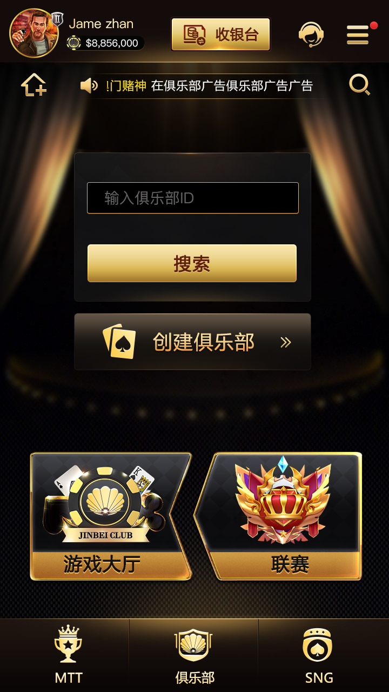

德州扑克源码
公开 C++ 服务端、Tars 接口、牌局状态与玩家流程代码入口。
德州扑克游戏源码项目介绍：C++与Tars服务端、八种玩法、大厅、俱乐部、联盟、好友局、SNG和MTT锦标赛，含真实产品截图。
公开 C++ 服务端、Tars 接口、牌局状态与玩家流程代码入口。
经典德州、AOF、短牌、SNG、MTT、德州牛仔、奥马哈和大菠萝。
大厅、房间、玩家、牌局与赛事构成多人扑克产品链路。
下列图片来自本仓库现有产品资源，用于展示实际界面，不是示意图。

| 登录与协议 | LoginProto.tars、LoginServant.tars、LoginServantImp.cpp、LoginServer.cpp |
|---|---|
| 牌局状态 | gamestation.cpp、Processor.cpp |
| 玩家流程 | sitdown.cpp、standup.cpp、userinfo.cpp、getuserinfo.cpp |
| 订单服务 | OrderServant.tars、OrderServer.cpp |
| 工程资产 | makefile、Proto/、u3d/、Screenshots/、docs/ |
公开仓库以服务端代码、协议文件和演示资源为主。客户端、数据库、运营后台和商业部署组件范围须以实际目录和授权为准。
经典德州、AOF 与 6+ 短牌覆盖标准和快节奏牌桌。
SNG 与 MTT 对应即时开赛和多桌锦标赛流程。
德州牛仔、奥马哈与大菠萝构成产品的扩展玩法入口。